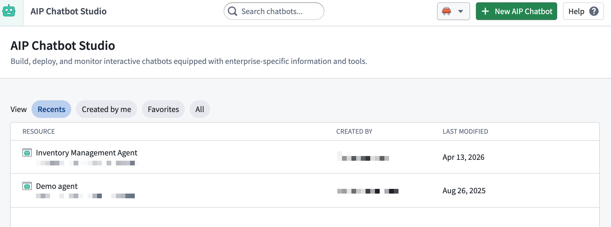
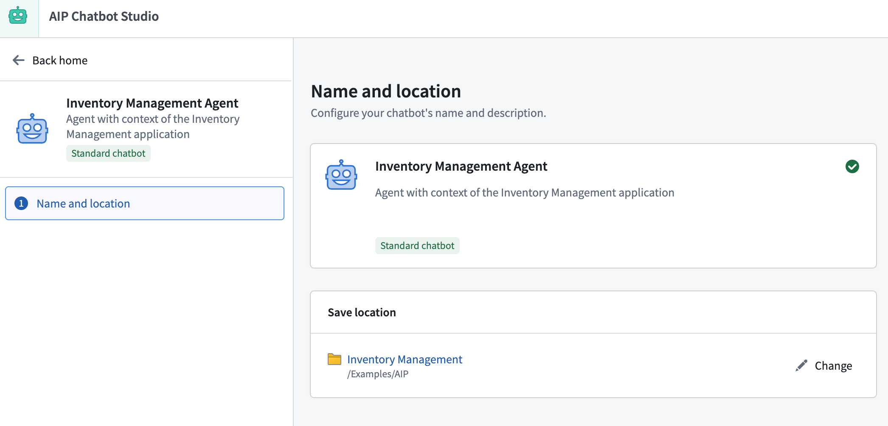
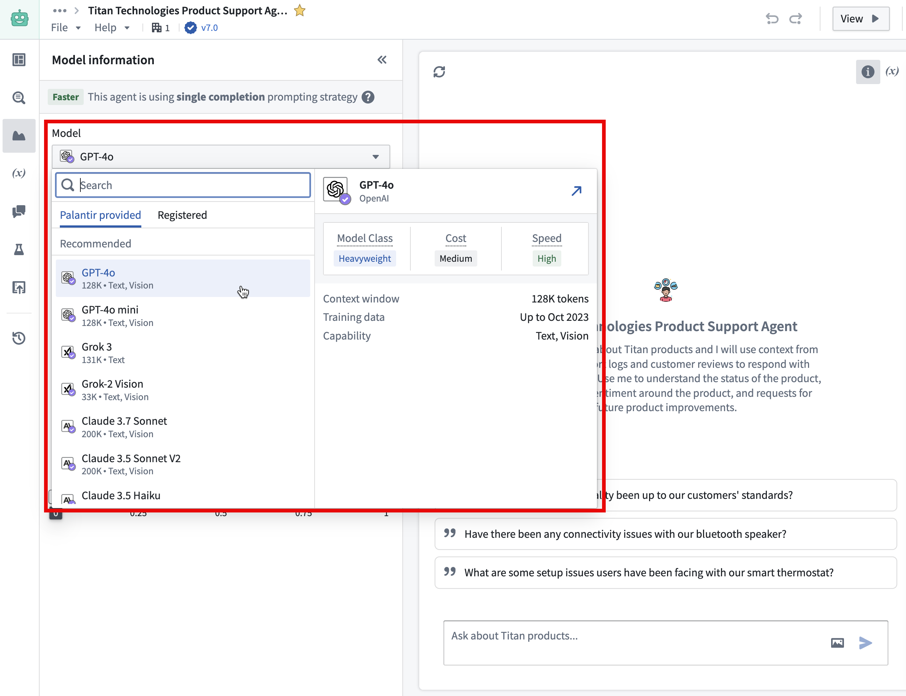
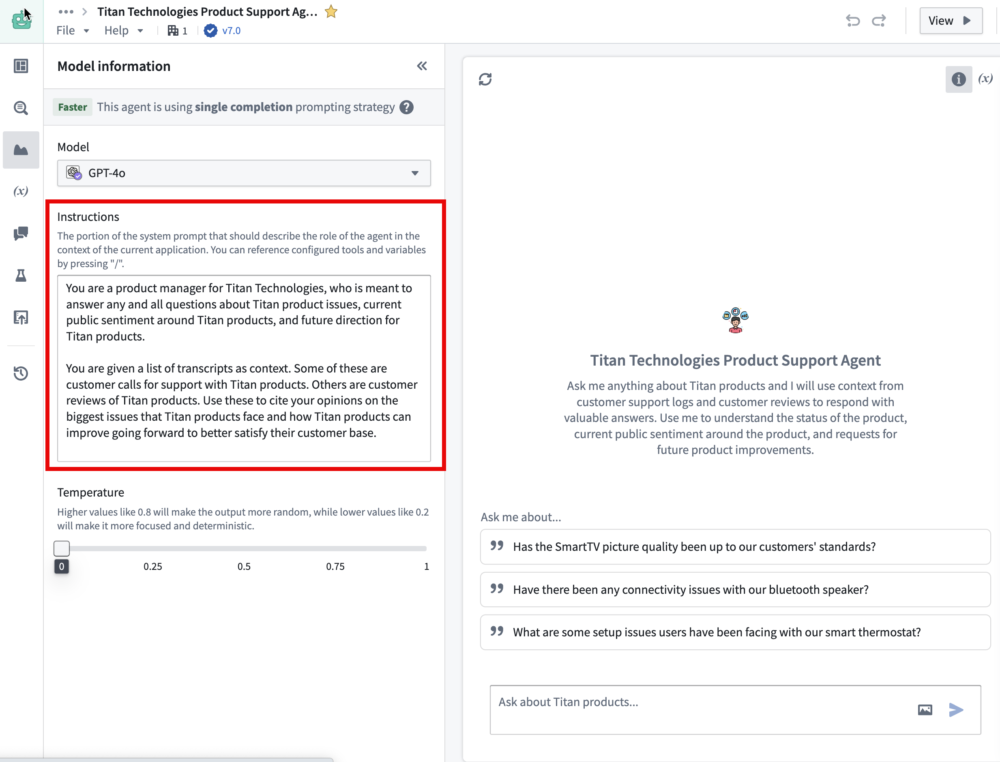
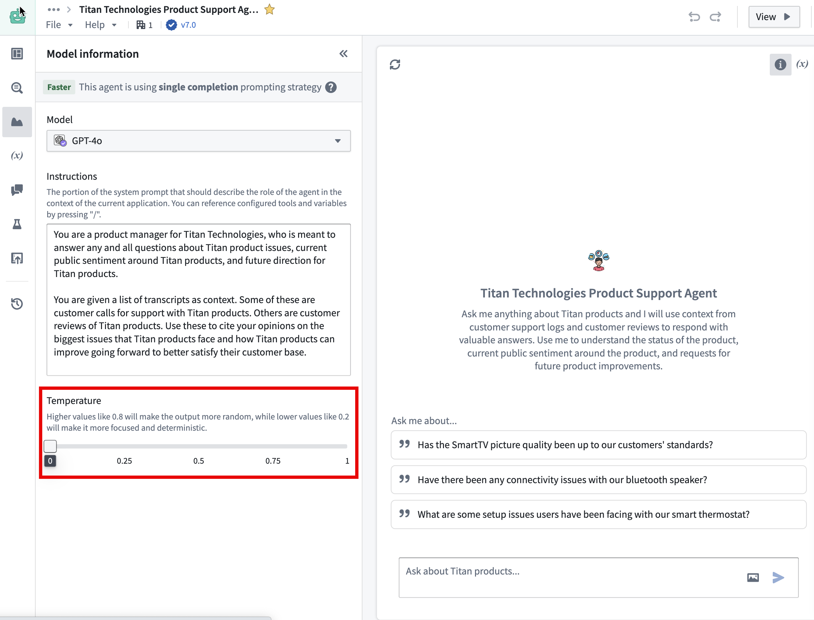
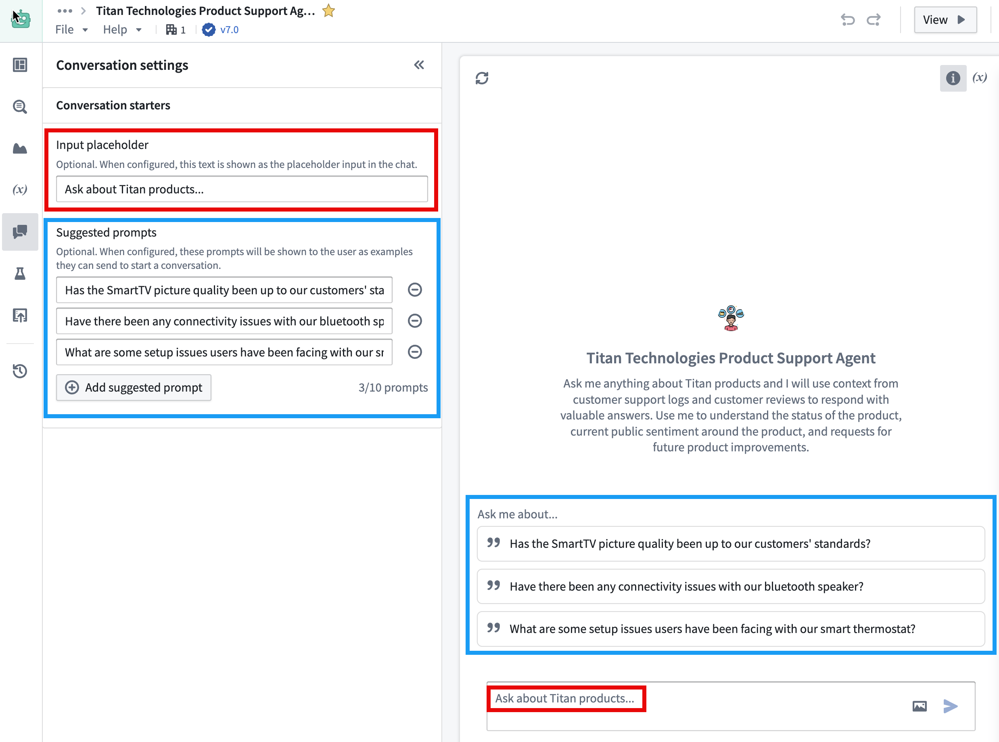
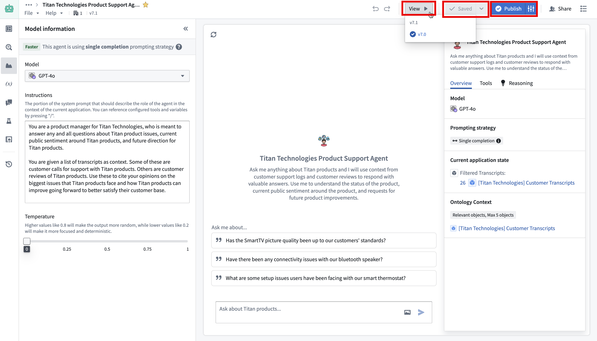
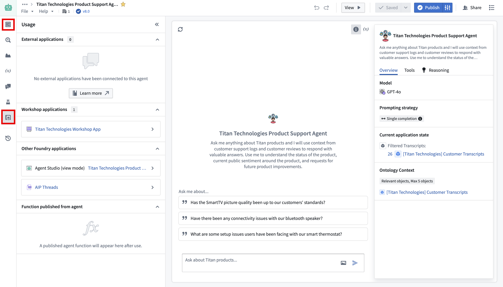

This guide demonstrates how to access AIP Chatbot Studio, introduces the AIP Chatbot Studio interface, describes how to set up a basic AIP Chatbot equipped with the information and tools that you choose, and how to deploy and monitor the AIP Chatbot in production.
AIP Chatbot Studio can be accessed from the platformâs workspace navigation bar or by using the quick search shortcuts CMD + J (macOS) or CTRL + J (Windows). Alternatively, you can create a new AIP Chatbot from your Files by selecting + New and then selecting AIP Chatbot, as shown below.
After opening AIP Chatbot Studio, you can create a new AIP Chatbot file.
AIP Chatbots are Palantir filesystem resources that have granular access control and can be created like any other filesystem resource, as shown in the image above, in the previous section.
You may also select the New AIP Chatbot option from within AIP Chatbot Studio.

Alternatively, create an AIP Chatbot from within AIP Threads.

Add the name, description, and a photo as an avatar for your AIP Chatbot. This enables you to white-label your chatbot to fit the context of your application. If an avatar is not provided, a gray robot icon will be used as the default.
Next, you will need to configure the enterprise-specific information and tools that will be equipped to your AIP Chatbot, as detailed in the following sections.
These configurations are what enable the LLM to be useful to your enterprise, your workflow, and your task.
The models available to you are a subset of those enabled on your enrollment.

The system prompt should outline the AIP Chatbot's function within the context of the current application. By pressing / on your keyboard, you can refer to the configured tools and application state and guide the AIP Chatbot on how to coordinate their usage. Make sure to describe the underlying business logic and the appropriate situations for using the right tools in context.

Users can modify the model temperature to determine the balance between focused, deterministic output (default value 0) and random output (maximum value 1).

You can also set up an input placeholder and suggested prompts to customize the chatbot for your intended workflow.

Once you have configured your AIP Chatbot, you can save your progress by using Save at the top right of the interface. You can add a description to your saved version by using the down arrow icon next to the Save option.
To view your AIP Chatbot in action in the perspective of an end-user interaction, use View and select the desired version.
When you are ready to deploy your AIP Chatbot, select Publish to make your chatbot available for use in production environments. You can also publish your chatbot as a function by selecting the configuration icon next to the Publish option. This allows you to run your chatbot via AIP Automate and AIP Evals.

You can monitor the performance and usage of your chatbot through the Monitoring and Usage tabs, where you can see metrics and feedback from users. Feedback data is received from users giving thumbs-up or thumbs-down signs to the chatbot from a conversation.
Use in AIP Threads, Workshop, view mode, or OSDK with Developer Console and platform APIs.
